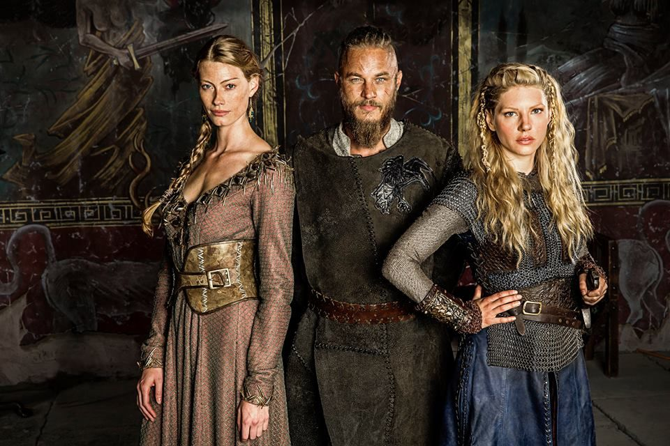

Ragnar Lothbrock
Ragnar Lothbrock è un re vichingo di Kattegat, grande guerriero e con mentalità molto aperta, soprattutto verso l'Inghilterra, dove voleva insediarsi pacificamante e costruire un villaggio.
Egli non è come gli altri guerrieri, si affascina dell'ignoto e della voglia di scoprire esso; ma la differenza più grande sta nella religione, infatti non è solo credente dei suoi dei, ma è anche aperto alle altre religioni e gli altri dei,
prendiamo come esempio il monaco Athelstan che ha influenzato molto Ragnar e le sue conquiste.
Inoltre Ragnar credeva che l'artefice del destino fosse proprio l'uomo, a decidere non sono gli dei, ma il fato può essere modellato come vuole l'uomo.
Tuttavia il monaco non stava molto a cuore al popolo di Kattegat, soprattuto a Floki, che considerava Athelstan come un insulto agli dei vichinghi, proprio per questo prima di salpare per Parigi, Floki lo uccise.
Ragnar era fidanzato con Lagherta e possedevano una piccola fattoria a Kattegat con un figlio: Bjorn.
Le cose da quando andarono per le prime volte in Inghilterra si misero male per la coppia, Ragnar conobbe Aslaug, figlia di Sigurd e si innamorarono da subito;
Quando tornò a casa e portò con sè l'amante, Lagherta si arrabbiò e se ne andò per molto tempo portando Bjorn con lei.

Nel frattempo Ragnar ebbe 4 figli con Aslaug: Ivar senz'ossa, Ubbe, Sigurd e Hvitserk; data la disfunzione di Ivar (non aveva le ossa nelle gambe), il padre lo abbandonò per non farlo soffire da grande, nella speranza che morisse, ma non fu così: Aslaug lo ritrovò e lo riportò a casa.
Il fratello Rollo da quando Ragnar diventò conte si mostrò subito invidioso della fama e del potere del fratello, infatti si alleò con lo jarl Borg e re Horik nella "battaglia tra fratelli", ma quando Rollo si trovò a scontrarsi con suo fratello non ebbe la forza di ucciderlo, ma non fu l'ultima volta che lo tradì...